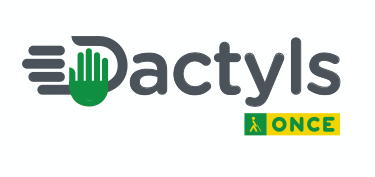

Proyecto DACTYLS

DACTYLS es un sistema alternativo de comunicación táctil de carácter mixto, diseñado para mejorar la interacción de las personas con sordoceguera. Este sistema combina el uso del alfabeto dactilológico táctil con la incorporación de signos táctiles y otros recursos propios, basándose en reglas gramaticales específicas que regulan su funcionamiento.
Objetivo del Proyecto
El proyecto tiene como finalidad dar a conocer y divulgar el sistema de comunicación DACTYLS, facilitando su aprendizaje y uso entre las personas con sordoceguera, sus familias y los profesionales que trabajan en su atención.
Desarrollo y Colaboración
Este proyecto ha sido diseñado y desarrollado de manera conjunta por:
- Unidad Técnica de Sordoceguera (UTS) de la ONCE
- Centro de Tiflotecnología e Innovación (CTI) de la ONCE
- Cátedra ONCE-Tiflotecnología UCM
- Universidad Complutense de Madrid (UCM)
Recursos Disponibles
Para facilitar el aprendizaje y uso de DACTYLS, se han puesto a disposición los siguientes recursos:
- Sitio web oficial: www.dactyls.es
- Aplicaciones móviles: Disponibles para dispositivos iOS y Android, que incluyen vídeos demostrativos de los signos y documentación relacionada.
Contacto
Para más información o consultas sobre el sistema DACTYLS, puedes dirigirte a la Unidad Técnica de Sordoceguera de la ONCE a través del correo electrónico: dactyls@once.es